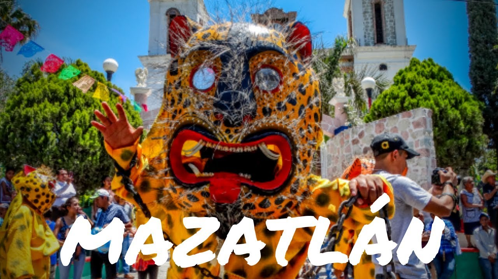
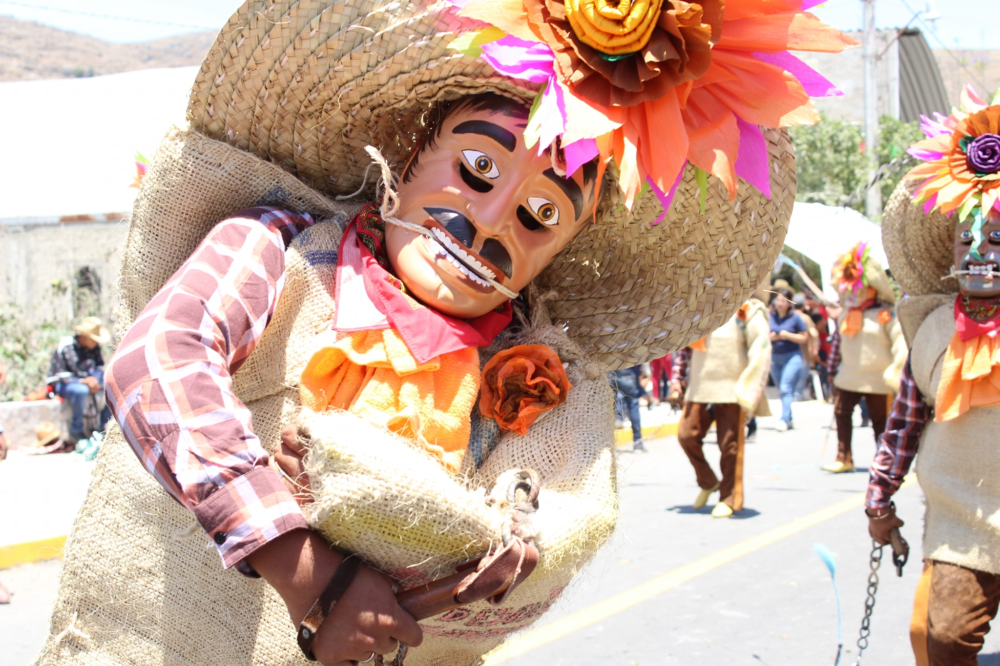

Esta feria es simplemente la tradición mas conmemorativa del pueblo; esta feria tradicional se realiza en el mes de abril, específicamente la segunda semana de pascua, en esta feria se hacen dos encuentros (un encuentro es que cada pueblo trae gente a Mazatlán para disfrutar la feria en calidad de invitados especiales) estos encuentros se hacen en la entrada principal. El primero de ellos es el primer domingo de feria, en este primer encuentro vienen los pueblos de: "Tepechicotlan, Petaquillas, Palo Blanco, Acahuizotla "en el segundo encuentro, que es el ultimo domingo de la feria vienen paisanos que radican en " Estados Unidos, Cd. De México, Acapulco Y Chilpancingo " siendo este Domingo el ultimo día de feria que se vive cada año en la Semana de Pascua.
Cultura y Tradicion
"Tradicional Feria de Pascua"
Jaripeos
Como toda Feria de Pueblo y de México, no podía faltar el jaripeo, era organizada por las distintas manzanas de los distintos barrios que conforma el pueblo, empezando con el Barrio de San Isidro, continuando con el Barrio de Santa Cruz, y Finalizando con el Barrio de San Rafael, los cuales llevan las madrinas para alagar al valiente Montador, y también la música de chile frito que ameniza estos jaripeos
Tlacololeros
La Danza de los Tlacololeros de Chilpancingo es una de las más antiguas y populares del estado de Guerrero. Su nombre proviene de la palabra mexica “tlacolol” que significa cultivo del campo. La danza representa los esfuerzos que hacen los campesinos por mantener a salvo sus cosechas.
